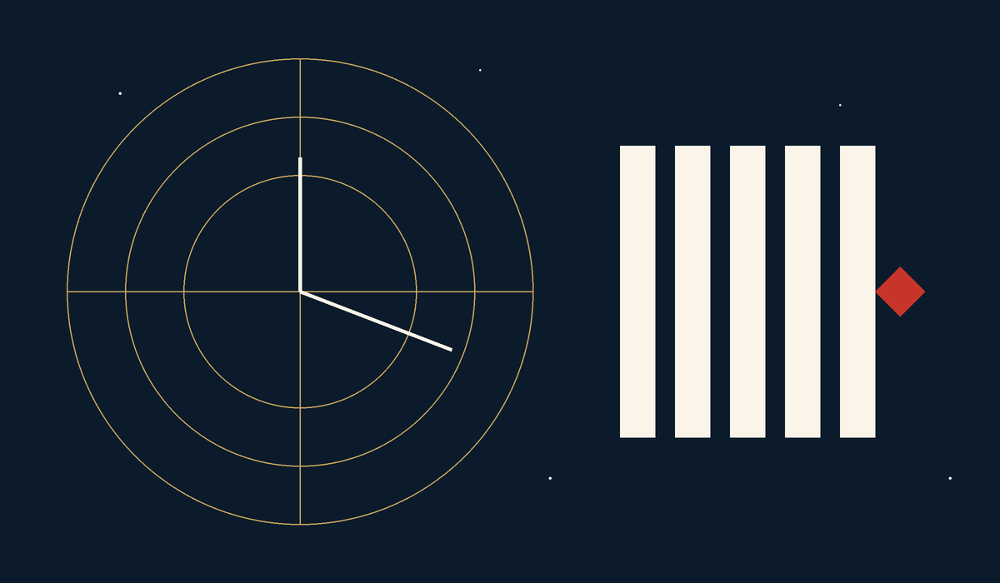

十二扇门。没有钟。每一扇门都在走秒。
钟表室的墙是温的。门后传来一只极大的钟在倒数的声音。房间里没有钟，只有十二扇一模一样的门；每过一秒，其中一扇就向内凹进一毫米。
你们听见钟声的时候，钟已经敲完了。现在它开始倒着走。
| d6 | 异常 |
|---|---|
| 1 | 你的影子晚到一秒。 |
| 2 | 一扇门打开，后面还是这间房。 |
| 3 | 口袋里所有的钟都停在 11:59。 |
| 4 | 房间记得一场你还没开始的对话。 |
| 5 | 星光绕过一个站着的人。 |
| 6 | 钟敲了第十三下。 |
每个异常只发生一次；如果重复掷出，改为“门向内凹进一毫米”并让危险 +1。
它不说话。它用房间里最后一个说话者的声音，重复那个人最后说的一句话。
| 轮 | 守卫 | 行动 |
|---|---|---|
| 1 | 分针 | 封住东门 |
| 2 | 时针 | 检查望远镜 |
| 3 | 秒针 | 重置房间 |

| 物品 | 类型 | 效果 |
|---|---|---|
| 黄铜钥匙 | 工具 | 打开一扇不存在的门 |
| 星之透镜 | 装备 | 看见一分钟后的未来 |
| 十三枚硬币 | 消耗品 | 每枚买一个诚实的答案 |
如果特工带走星之透镜，守卫会跟出天文台。它从不进入教堂。